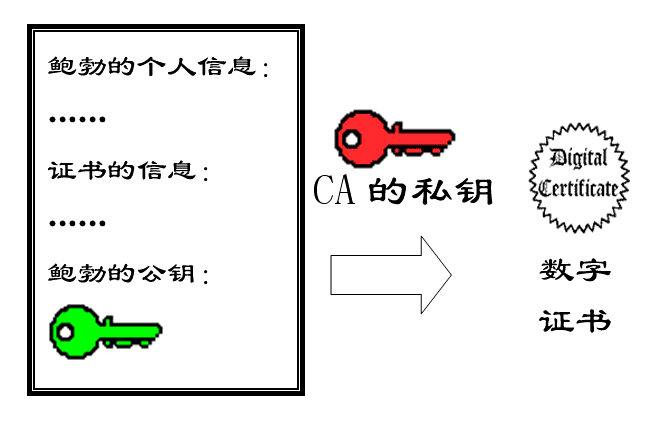
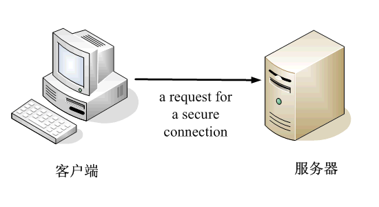

# openssl 概述
OpenSSL 是一个强大的安全套接字层密码库，囊括主要的密码算法、常用的密钥和证书封装管理功能及 SSL 协议，并提供丰富的应用程序供测试或其它目的使用。
# 公钥 / 私钥 / 签名 / 验证签名 / 加密 / 解密 / 非对称加密
我们一般的加密是用一个密码加密文件，然后解密也用同样的密码。这很好理解，这个是对称加密。而有些加密时，加密用的一个密码，而解密用另外一组密码，这个叫非对称加密，意思就是加密解密的密码不一样。初次接触的人恐怕无论如何都理解不了。其实这是数学上的一个素数积求因子的原理的应用，如果你一定要搞懂，百度有大把大把的资料可以看，其结果就是用这一组密钥中的一个来加密数据，可以用另一个解开。是的没错，公钥和私钥都可以用来加密数据，相反用另一个解开，公钥加密数据，然后私钥解密的情况被称为加密解密，私钥加密数据，公钥解密一般被称为签名和验证签名.
因为公钥加密的数据只有它相对应的私钥可以解开，所以你可以把公钥给人和人，让他加密他想要传送给你的数据，这个数据只有到了有私钥的你这里，才可以解开成有用的数据，其他人就是得到了，也看懂内容。同理，如果你用你的私钥对数据进行签名，那这个数据就只有配对的公钥可以解开，有这个私钥的只有你，所以如果配对的公钥解开了数据，就说明这数据是你发的，相反，则不是。这个被称为签名.
实际应用中，一般都是和对方交换公钥，然后你要发给对方的数据，用他的公钥加密，他得到后用他的私钥解密，他要发给你的数据，用你的公钥加密，你得到后用你的私钥解密，这样最大程度保证了安全性.
# RSA/AES/DSA/SHA/MD5
非对称加密的算法有很多，比较著名的有 RSA/DSA , 不同的是 RSA 可以用于加 / 解密，也可以用于签名验签，DSA 则只能用于签名.
至于 <font face="fantasy" color=#0099ff>SHA</font> 则是一种和 md5 相同的算法，它不是用于加密解密或者签名的，它被称为 < font face="fantasy" color=#0099ff> 摘要算法 </font>. 就是通过一种算法，依据数据内容生成一种固定长度的摘要，这串摘要值与原数据存在对应关系，就是原数据会生成这个摘要，但是，这个摘要是不能还原成原数据的，嗯…., 正常情况下是这样的，这个算法起的作用就是，如果你把原数据修改一点点，那么生成的摘要都会不同，传输过程中把原数据给你再给你一个摘要，你把得到的原数据同样做一次摘要算法，与给你的摘要相比较就可以知道这个数据有没有在传输过程中被修改了.
Hash 算法特别的地方在于它是一种单向算法，用户可以通过 Hash 算法对目标信息生成一段特定长度的唯一的 Hash 值，却不能通过这个 Hash 值重新获得目标信息。因此 Hash 算法常用在不可还原的密码存储、信息完整性校验等。
常见的 Hash 算法有 MD2、MD4、MD5、HAVAL、SHA.
加密算法的效能通常可以按照算法本身的复杂程度、密钥长度（密钥越长越安全）、加解密速度等来衡量。上述的算法中，除了 DES 密钥长度不够、MD2 速度较慢已逐渐被淘汰外，其他算法仍在目前的加密系统产品中使用。
实际应用过程中，因为需要加密的数据可能会很大，进行加密费时费力，所以一般都会把原数据先进行摘要，然后对这个摘要值进行加密，将原数据的明文和加密后的摘要值一起传给你。这样你解开加密后的摘要值，再和你得到的数据进行的摘要值对应一下就可以知道数据有没有被修改了，而且，因为私钥只有你有，只有你能解密摘要值，所以别人就算把原数据做了修改，然后生成一个假的摘要给你也是不行的，你这边用密钥也根本解不开.
**RSA: **
非对称加密，公钥加密，私钥解密，反之亦然。由于需要大数的乘幂求模等算法，运行速度慢，不易于硬件实现。
通常私钥长度有 512bit，1024bit，2048bit，4096bit，长度越长，越安全，但是生成密钥越慢，加解密也越耗时。
既然是加密，那肯定是不希望别人知道我的消息，所以只有我才能解密，所以可得出公钥负责加密，私钥负责解密；
同理，既然是签名，那肯定是不希望有人冒充我发消息，只有我才能发布这个签名，所以可得出私钥负责签名，公钥负责验证。
**AES: **
对称加密，密钥最长只有 256 个 bit，执行速度快，易于硬件实现。由于是对称加密，密钥需要在传输前通讯双方获知。
基于以上特点，通常使用 RSA 来首先传输 AES 的密钥给对方，然后再使用 AES 来进行加密通讯。
# CA/PEM/DER/X509/PKCS
一般的公钥不会用明文传输给别人的，正常情况下都会生成一个文件，这个文件就是公钥文件，然后这个文件可以交给其他人用于加密，但是传输过程中如果有人恶意破坏，将你的公钥换成了他的公钥，然后得到公钥的一方加密数据，不是他就可以用他自己的密钥解密看到数据了吗，为了解决这个问题，需要一个公证方来做这个事，任何人都可以找它来确认公钥是谁发的。这就是 CA,CA 确认公钥的原理也很简单，它将它自己的公钥发布给所有人，然后一个想要发布自己公钥的人可以将自己的公钥和一些身份信息发给 CA,CA 用自己的密钥进行加密，这里也可以称为 <font face="fantasy" color=#0099ff> 签名 </font>. 然后这个 ** 包含了你的公钥和你的信息的文件就可以称为 <font face="fantasy" color=#0099ff> 证书文件 </font > 了.** 这样一来所有得到一些公钥文件的人，通过 CA 的公钥解密了文件，如果正常解密那么机密后里面的信息一定是真的，因为加密方只可能是 CA, 其他人没它的密钥啊。这样你解开公钥文件，看看里面的信息就知道这个是不是那个你需要用来加密的公钥了.
实际应用中，一般人都不会找 CA 去签名，因为那是收钱的，所以可以自己做一个自签名的证书文件，就是自己生成一对密钥，然后再用自己生成的另外一对密钥对这对密钥进行签名，这个只用于真正需要签名证书的人，普通的加密解密数据，直接用公钥和私钥来做就可以了.
密钥文件的格式用 OpenSSL 生成的就只有 PEM 和 DER 两种格式，PEM 的是将密钥用 base64 编码表示出来的，直接打开你能看到一串的英文字母，DER 格式是二进制的密钥文件，直接打开，你可以看到…….. 你什么也看不懂！
.X509 是通用的证书文件格式定义.
pkcs 的一系列标准是指定的存放密钥的文件标准。
你只要知道 PEM DER X509 PKCS 这几种格式是可以互相转化的.
下面内容转自: csdn certificate key blog
# 一、公钥加密
假设一下，我找了两个数字，一个是 1，一个是 2。我喜欢 2 这个数字，就保留起来，不告诉你们 (私钥），然后我告诉大家，1 是我的公钥。
我有一个文件，不能让别人看，我就用 1 加密了。别人找到了这个文件，但是他不知道 2 就是解密的私钥啊，所以他解不开，只有我可以用数字 2，就是我的私钥，来解密。这样我就可以保护数据了。
我的好朋友 x 用我的公钥 1 加密了字符 a，加密后成了 b，放在网上。别人偷到了这个文件，但是别人解不开，因为别人不知道 2 就是我的私钥，只有我才能解密，解密后就得到 a。这样，我们就可以传送加密的数据了。
# 二、私钥签名
如果我用私钥加密一段数据（当然只有我可以用私钥加密，因为只有我知道 2 是我的私钥），结果所有的人都看到我的内容了，因为他们都知道我的公钥是 1，那么这种加密有什么用处呢？
但是我的好朋友 x 说有人冒充我给他发信。怎么办呢？我把我要发的信，内容是 c，用我的私钥 2，加密，加密后的内容是 d，发给 x，再告诉他解密看是不是 c。他用我的公钥 1 解密，发现果然是 c。这个时候，他会想到，能够用我的公钥解密的数据，必然是用我的私钥加的密。只有我知道我的私钥，因此他就可以确认确实是我发的东西。
这样我们就能确认发送方身份了。这个过程叫做数字签名。当然具体的过程要稍微复杂一些。<table><tr><td bgcolor=#54FF9F > 用私钥来加密数据，用途就是数字签名.</td></tr></table>
总结：
**公钥和私钥是成对的，它们互相解密。**
**公钥加密，私钥解密。**
**私钥数字签名，公钥验证。**
数字签名是指将摘要信息使用接收者的公钥进行加密，与密文一起发送给接收者。接收者使用自己的私钥对摘要信息进行解密，然后使用 Hash 函数对收到的密文产生一个摘要信息，然后将摘要信息与发送着传输过来解密后的摘要信息对比是否一致。如果一致，则表明数据信息没有被篡改。
# 三、举例
比如有两个用户 Alice 和 Bob，Alice 想把一段明文通过双钥加密的技术发送给 Bob，Bob 有一对公钥和私钥，那么加密解密的过程如下：
- Bob 将他的公开密钥传送给 Alice。
- Alice 用 Bob 的公开密钥加密她的消息，然后传送给 Bob。
- Bob 用他的私人密钥解密 Alice 的消息。
上面的过程可以用下图表示，Alice 使用 Bob 的公钥进行加密，Bob 用自己的私钥进行解密。
例子和图出自《网络安全基础 应用与标准第二版》
# 四、图解
今天，我读到一篇好文章。
它用图片通俗易懂地解释了，"数字签名"（digital signature）和 "数字证书"（digital certificate）到底是什么。
我对这些问题的理解，一直是模模糊糊的，很多细节搞不清楚。读完这篇文章后，发现思路一下子就理清了。为了加深记忆，我把文字和图片都翻译出来了。
数字签名是什么？
作者：David Youd
翻译：阮一峰
原文网址：http://www.youdzone.com/signature.html
鲍勃（服务器）有两把钥匙，一把是公钥，另一把是私钥。
鲍勃把公钥送给他的朋友们 ---- 帕蒂（客户端 1）、道格（客户端 2）、苏珊（客户端 3）---- 每人一把。
苏珊（客户端 3）给鲍勃（服务器）写信，写完后用鲍勃的公钥加密，达到保密的效果。
鲍勃收信后，用私钥解密，看到信件内容。
鲍勃给苏珊回信，写完后用 Hash 函数，生成信件的摘要（digest）。
然后，<font face="fantasy" color=#0099ff> 鲍勃使用私钥，对这个摘要加密，生成 "数字签名"(signature).</font>
鲍勃将这个签名，附在信件下面，一起发给苏珊。
苏珊收信后，取下数字签名，<font face="fantasy" color=#0099ff> 用鲍勃的公钥解密，得到信件的摘要。</font> 由此证明，这封信确实是鲍勃发出的。
苏珊再对信件本身 <font face="fantasy" color=#0099ff>** 使用 Hash 函数，将得到的结果，与上一步得到的摘要进行对比。</font>** 如果两者一致，就证明这封信未被修改过。
复杂的情况出现了。道格（客户端 2）想欺骗苏珊，他偷偷使用了苏珊的电脑，用自己的公钥换走了鲍勃的公钥。因此，他就可以冒充鲍勃，写信给苏珊。
此时客户端 2 的想法是：自己生成了一对公私密钥对，然后给苏珊一个公钥，自己发送数据和签名给苏珊，苏珊在不知道公钥被替换的情况下不知道服务器已被冒充，这样便形成了数据信息的泄露。

苏珊发现，自己无法确定公钥是否真的属于鲍勃。她想到了一个办法，要求鲍勃去找 "证书中心"（certificate authority，简称 CA），为公钥做认证。<font face="fantasy" color=#0099ff> 证书中心用自己的私钥，对鲍勃的公钥和一些相关信息一起加密，生成 "数字证书"(Digital Certificate).</font>
鲍勃拿到数字证书以后，就可以放心了。以后再给苏珊写信，只要在签名的同时，再附上数字证书就行了。
苏珊收信后，用 CA 的公钥解开数字证书，就可以拿到鲍勃真实的公钥了，然后就能证明 "数字签名" 是否真的是鲍勃签的。
下面，我们看一个应用 "数字证书" 的实例：https 协议。这个协议主要用于网页加密。

首先，客户端向服务器发出加密请求。
服务器用自己的私钥加密网页以后，连同本身的数字证书，一起发送给客户端。
客户端（浏览器）的 "证书管理器"，有 "受信任的根证书颁发机构" 列表。客户端会根据这张列表，查看解开数字证书的公钥是否在列表之内。
如果数字证书记载的网址，与你正在浏览的网址不一致，就说明这张证书可能被冒用，浏览器会发出警告。
如果这张数字证书不是由受信任的机构颁发的，浏览器会发出另一种警告。
数字证书如果是可靠的，客户端就可以使用证书中的服务器公钥，对信息进行加密，然后与服务器交换加密信息。